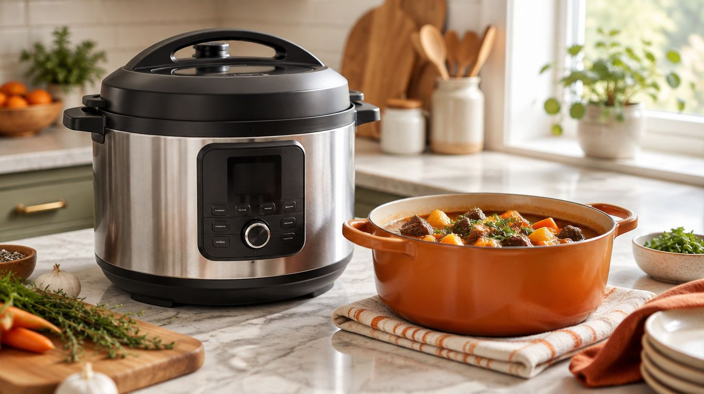
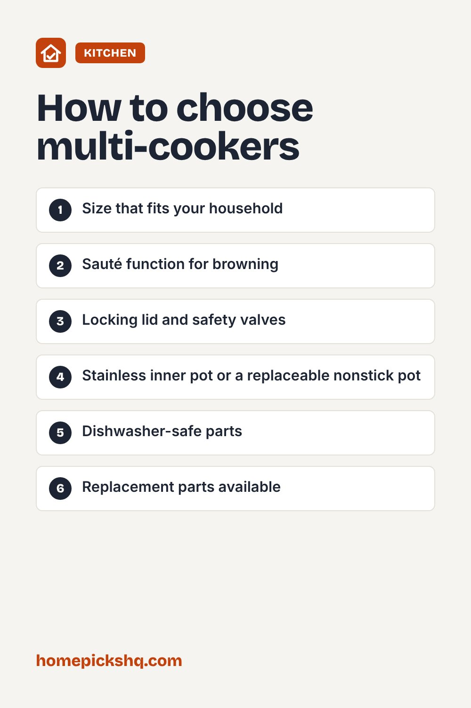

Best Multi-Cookers and Pressure Cookers: A Buyer's Guide

How we write these guides: we research manufacturer specifications, expert guidance, and owner feedback. We do not claim to have lab-tested every product. Links to Amazon on this page are affiliate links; see our disclosure.
Electric multi-cookers combine a pressure cooker, slow cooker, rice cooker, and sauté pan in one pot. They can turn tough cuts of meat tender in a fraction of the usual time, and they free up stove space. If you are new to them, here is how to choose and use one well.
Browse multi-cookers on Amazon
Pick the right size
Capacity is listed in quarts. A 3 quart model suits one or two people. A 6 quart model is the most popular size and works for most households of three to five. An 8 quart model suits large families or batch cooking. Remember that you generally cannot fill a pressure cooker to the top.
Functions to look for
Most models include pressure cook, slow cook, sauté, steam, and rice settings. Some add yogurt, canning, or air fry lids. Sauté is especially useful, because you can brown meat in the same pot before pressure cooking. Choose a model with the functions you will really use rather than the longest list.
Safety features
Look for a locking lid, a pressure release valve, and overheat protection. Never force the lid open. Follow the manual for the maximum fill line, which is commonly two-thirds full, and lower for foods that foam or expand such as beans and grains. Pressure cookers also require a minimum amount of liquid to build pressure, so check the manual.
Inner pot and cleaning
Stainless steel inner pots are durable and good for browning. Nonstick pots are easier to clean but can wear. Remove and wash the sealing ring and the lid regularly, since the ring can hold odors. Many rings can be replaced inexpensively.
Release methods
Natural release lets the pressure drop on its own and is better for meats and foods that foam. Quick release is faster and suits vegetables. Always keep your hands and face away from the steam vent.
Quick buying checklist
- Size that fits your household
- Sauté function for browning
- Locking lid and safety valves
- Stainless inner pot or a replaceable nonstick pot
- Dishwasher-safe parts
- Replacement parts available
See multi-cookers on AmazonUse the checklist above to compare options. As an Amazon Associate I earn from qualifying purchases.

Frequently asked questions
Are electric pressure cookers safe?
Modern models have multiple safety features. Follow the manual and fill limits.
Can I use it as a slow cooker?
Yes, most have a slow cook setting, though it may behave a little differently than a dedicated slow cooker.
Why does my food smell like the last meal?
The silicone sealing ring can absorb odors. Wash it or keep separate rings for sweet and savory dishes.